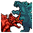

Cosas Descartadas Cosas Descartadas |
 Capturas viejas Capturas viejas |
Wrong Way |
|---|
Por aquí está todo lo relaccionado a...
THE BOARD
|
¿Qué es esto? THE BOARD es una combinación de gran cantidad de tableros pertenecientes al juego original, a la creepypasta, Replay, las historias de April Fools y fanpastas. En un principio lo hice por mero aburrimiento, compartiendo por varios servidores de discord del tema, pero ahora me gusta verlo como una demostración de todo lo que ha llegado a hacer esta comunidad. |
|
Aquí están todas las versiones que he ido haciendo, para que puedas ver como ha ido expandiéndose haz clic en la imágen. Las fanpastas incluidas son: Chaospasta, Compassion, Fingerbones, SCARYPASTA GOES TO HELL, Insolvent y Wrong Way. |
|
¡Ya de paso traigo unos extras! Primero, esta es la primerísima versión, del 2019 (si, la mayoría de cosas viejas que hice de Nes Godzilla se remontan a 2019). Aquí están todos los mundos del juego menos PLUTÓN, que es jodidamente grande. Fue al mostrar en una charla por discord esta imagen que me animé a hacer la primera versión de THE BOARD; y el resto es historia. |
 |
Esta versión se me ocurrió hacerla con la idea de que la sociedad de ALKALI se expandiera hacia otros planetas del tablero, colonizándolos y estableciendo en estas partes de los diferentes sectores. Dudo que algún día vuelva a actualizar esto, ya que acabó siendo algo tedioso de hacer. |
|
Y, para terminar, aquí está una captura de un hipotético modo multijugador/MMO en este mapa. Imagínate intentar explorar esto, es toda una locura. |
 |